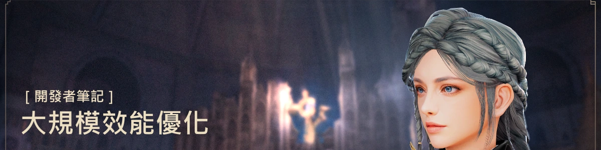
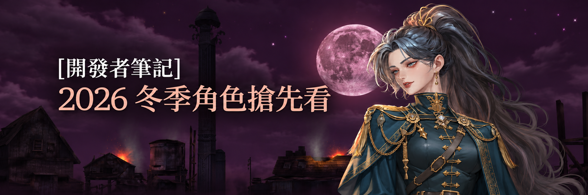
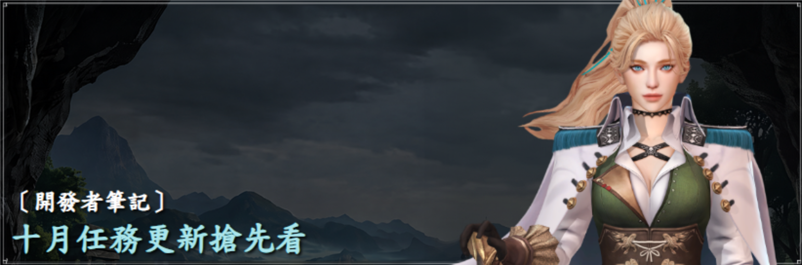

ISSUE 01
家族大廳與市場商店
擴充相關文字可能顯示亂碼或空白。
DOWNLOAD TERMINAL
目前已合併英文內容，其他項目將逐步更新。
包含主要漢化檔與支援中、泰、越文顯示的字體檔。
dictionary.ipf主要漢化檔案font00000.ipf中文字體顯示改善下載後請依照下方步驟安裝。建議先備份原始字體檔。
新增「秋日雙重好禮」、「我想成為大人！」、「2026 突破極限」
FIELD MANUAL · 01
三個步驟完成部署。安裝前請先關閉遊戲。
確認資料夾中有 dictionary.ipf 與 font00000.ipf。
若沒有修改 Steam 安裝位置，使用下方預設路徑。
C:\Program Files (x86)\Steam\steamapps\common\Granado Espada For SEA\ge將檔案放進 ge 資料夾，遇到同名檔案時選擇「取代目的地中的檔案」。
建議保留原本的 font00000.ipf，以免更換字體後不習慣。
FIELD MANUAL · 02
從遊戲的 ge 資料夾刪除 dictionary.ipf，即可移除漢化內容。
在收藏庫對 Granado Espada 按右鍵，選擇「內容」。
進入「已安裝檔案」，點選驗證，即可恢復原廠字體。
KNOWN ISSUES
以下項目仍需拆包解析，目前暫時無法修正與翻譯。
擴充相關文字可能顯示亂碼或空白。
部分怪物名稱目前無法套用漢化。
SEA CAMPAIGN LOG
點選活動圖片可查看完整繁體中文活動內容。

麗貝卡與雷文的兩項秋季任務，各有每日與累計獎勵。

向維奇接取每日任務，領取每日與累計完成獎勵。

挑戰 40 個關卡，領取首次通關及全通關獎勵。

完成四位客人的每日請求，提升好感度並領取獎勵。
完成每日活動任務，取得每日與累計完成獎勵。
完成每日活動任務，取得增益道具與累計獎勵。
完成每日活動任務，取得活動增益與累計獎勵。

任務活動結束，目前剩下禮包內容。

SEA 官方活動翻譯紀錄。
SEA 官方活動翻譯紀錄。
KOREAN SERVER NEWS
以下更新韓版官方新資訊，點選圖片可查看翻譯後的完整內容。

卡蜜兒留在戰場的另一段故事、固有技能與五招姿勢技能實演。

韓版地圖載入與戰鬥 FPS 實測、64 位元更新時程及 DirectX 12 開發計畫。

總司令卡蜜兒、梅莉塔、露切與黛莉亞，四位韓版新角色介紹。

招募角色、地下研究棟、每週任務、伊奈克斯防具與裝備飾品。

人類機神、全新防具、任務與角色。建議使用電腦觀看完整動畫。

每日任務獎勵改版修訂與新難度說明。

命運裝填、四種強化子彈與技能介紹。

副本與獎勵變動。

韓版新角色與技能介紹。

開拓地圖與神器系統更新。
SEA MAINTENANCE NOTICE
全伺服器臨時維修，修正角色名稱等部分文字顯示異常。
時段日期依官方公告標題與時差換算，原文日期標示有出入。
SGT／台灣時間
EST／美國東部時間
CET／歐洲中部時間
TEMPORARY MAINTENANCE · 2026.11.20
官方更新版的標題日期為 11 月 20 日，時段欄則將三地都標為 11 月 19 日。依標題及時差換算，台灣與歐洲的維修時段落在 11 月 20 日，美東為 11 月 19 日晚間。
imcGAMES 將在全伺服器進行短暫維修，修正部分文字（包括角色名稱）顯示不正確的問題。
本次臨時維修結束後，角色改名服務將免費開放至下次例行維修前。
因本次臨時維修，Ferruccio 伺服器將獲得以下補償。
若遊戲中遇到問題，請透過官方客服頁面提交回報，並說明遇到的情況。官方對維修造成的不便致歉。